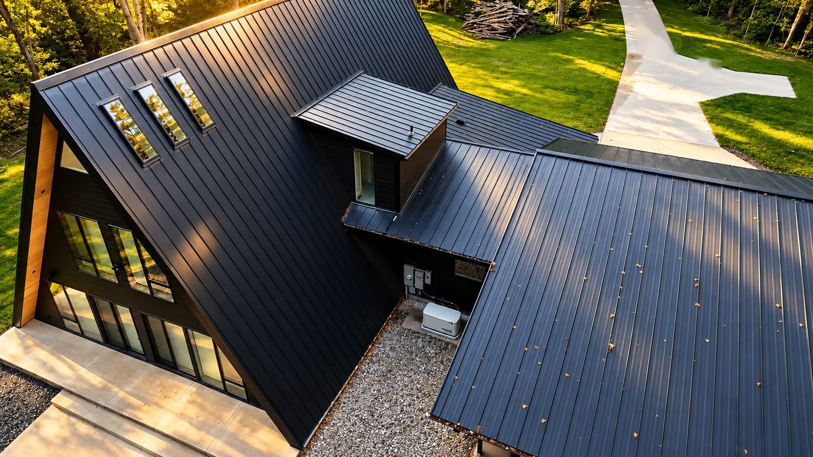
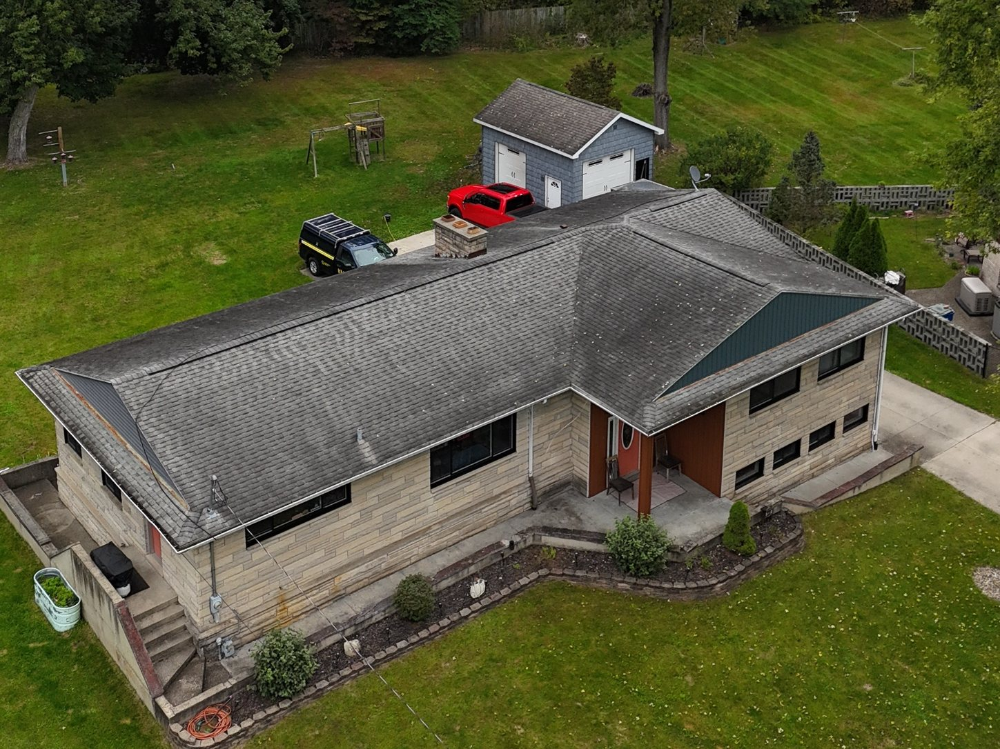
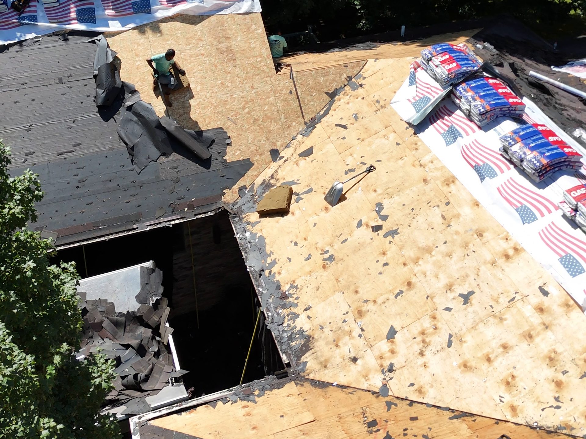
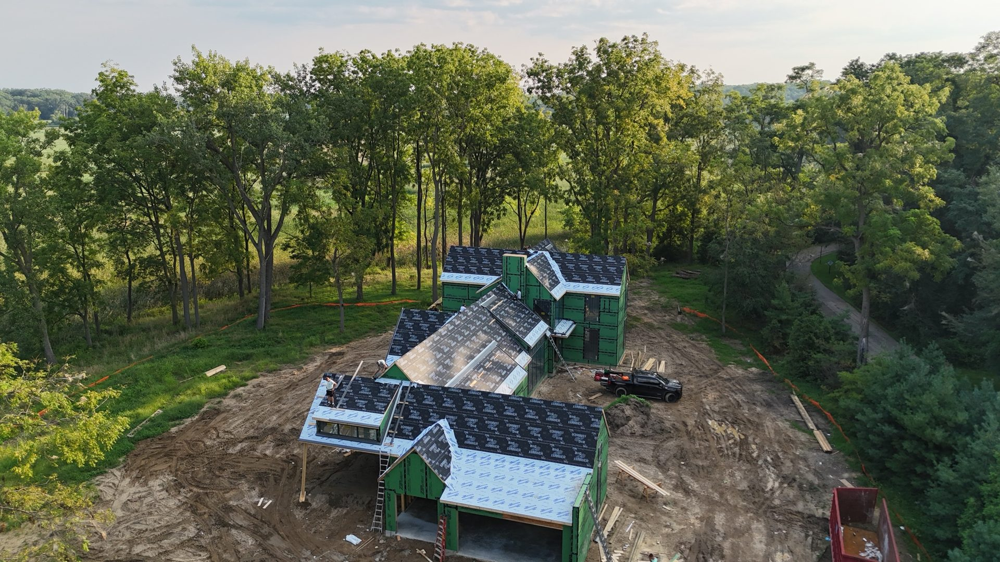
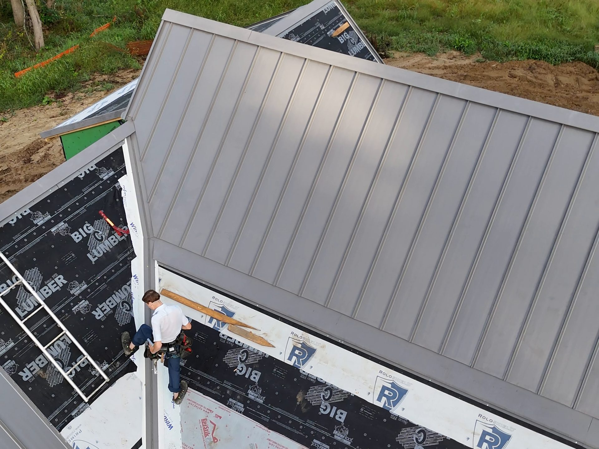
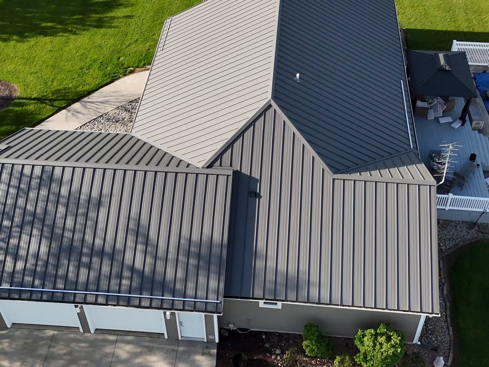

Standing seam
Metal roofing with vertical panels joined by raised, interlocking seams that conceal fasteners, offering durability and weather resistance.
Explore standing seam





Specializing in standing seam and board & batten.
A free inspection finds what is really going on up there, before a single shingle comes off.
We strip the roof to the deck, replace anything soft and only then start the new roof.
Underlayment, ice & water shield and sealed flashings go down before any metal or shingle does.
Standing seam goes on over a dry, sealed deck and is flashed at every edge, valley and penetration.
A magnet sweep, a cleaned yard and a walk-through. Then the roof is yours.
Metal roofing with vertical panels joined by raised, interlocking seams that conceal fasteners, offering durability and weather resistance.
Explore standing seamDurable steel siding in board and batten, ribbed and other profiles. Resists rot, fading and chalking, with minimal maintenance. Ideal for full exteriors or accent features.
Explore steel sidingCorrugated or ribbed steel panels with exposed fasteners, offering an affordable, lightweight, durable roof common on barns and sheds.
Explore ribbed metalA timeless roofing choice that’s quick to install, easy to repair, and offers dependable protection with lasting curb appeal.
Explore asphalt shinglesPick a roof, siding and fascia color and see them on a finished job. We bring full manufacturer samples to your estimate so you can hold them against your trim and stone.
Sample colors. Final colors come from the manufacturer chart.
My new roof is absolutely beautiful! I was out of the area the day they started and finished and what a great surprise…
They put a metal roof on my parents house, neighbors and today did mine. Very professional. Fast and they clean…
These guys were great.
Based in Shipshewana, Indiana. Tell us where the property is and we will schedule a free inspection. You get a written quote with the roof deck condition, the materials and the price.
Every job starts with a free inspection and ends with a cleaned yard, a magnet sweep and a walk-through. If you have a roof that needs a second opinion, we will give you one.
Or call 260-316-7419
Yes. Every job starts with a free inspection. You receive a written quote that details the condition of the roof deck, the materials specified and the total price.
We compare appearance, roof slope, building use, maintenance, and budget. Options include standing seam, ribbed metal, and GAF asphalt shingles.
Sometimes. We first check the existing layers, decking, ventilation, local requirements, and manufacturer instructions before recommending an overlay or tear-off.
With solid decking, underlayment, insulation, and the full building assembly, most homeowners do not notice a major difference from other roofing systems.
Timing depends on roof size, complexity, material, preparation, and weather. Your schedule and expected work sequence are reviewed before the project begins.
ProLine backs its installation with a lifetime craftsmanship warranty. Manufacturer coverage varies by the roofing or siding product selected.
Yes. ProLine installs GAF asphalt shingles, metal roofing systems, and steel siding for homes, garages, shops, agricultural, and commercial properties.
We serve Northern Indiana and Southwest Michigan from our home base in Shipshewana, Indiana. If you are not sure we cover your area, call us at 260-316-7419.
Yes. ProLine Roofing is licensed, bonded and insured in Indiana and Michigan.
Yes. Ask us about financing options during your free inspection.